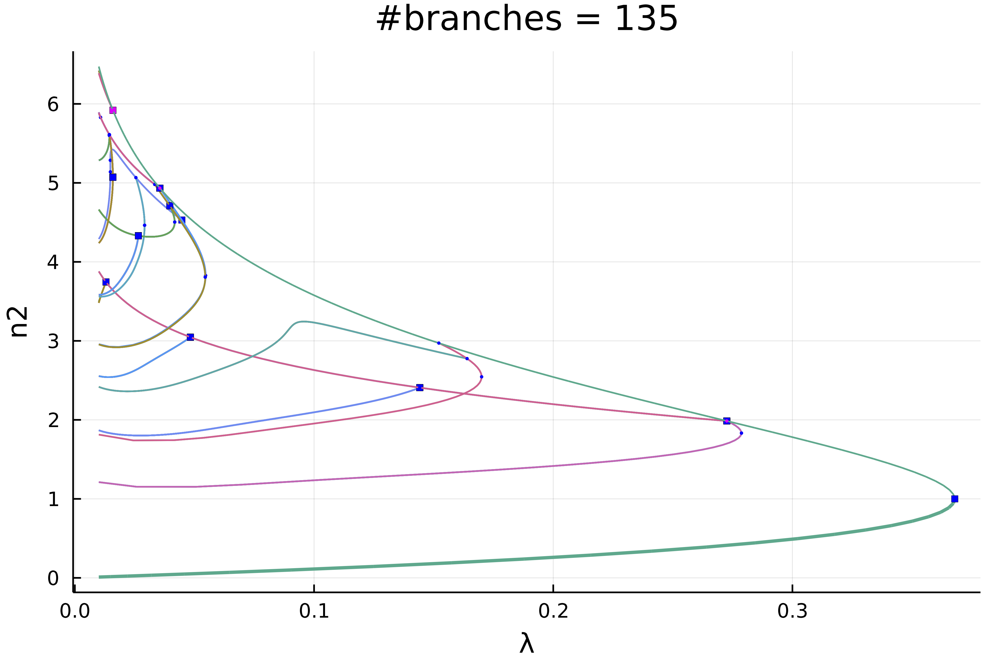
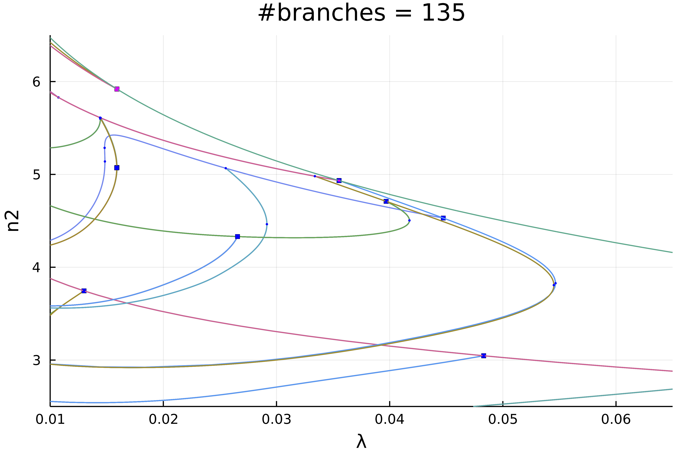
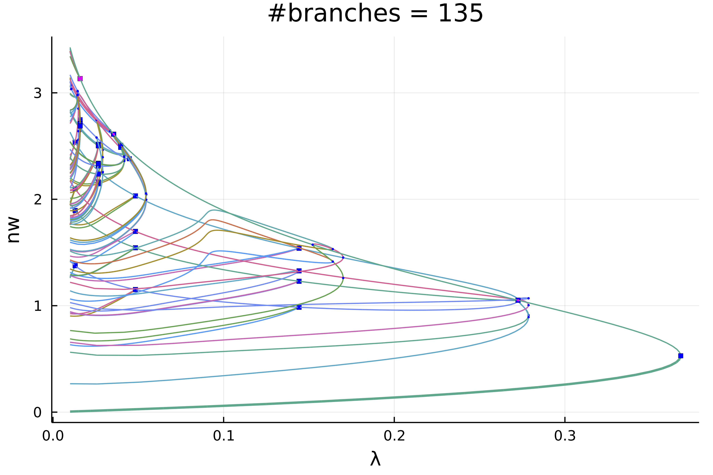
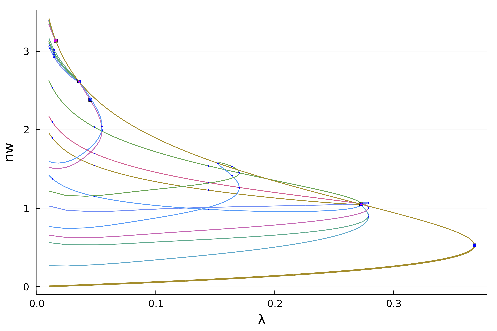
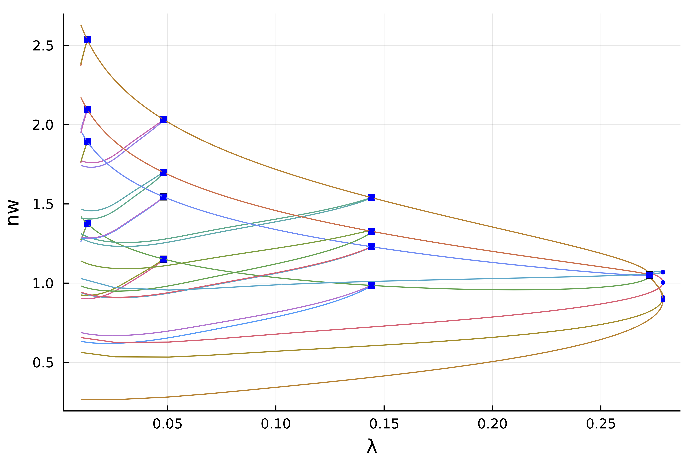
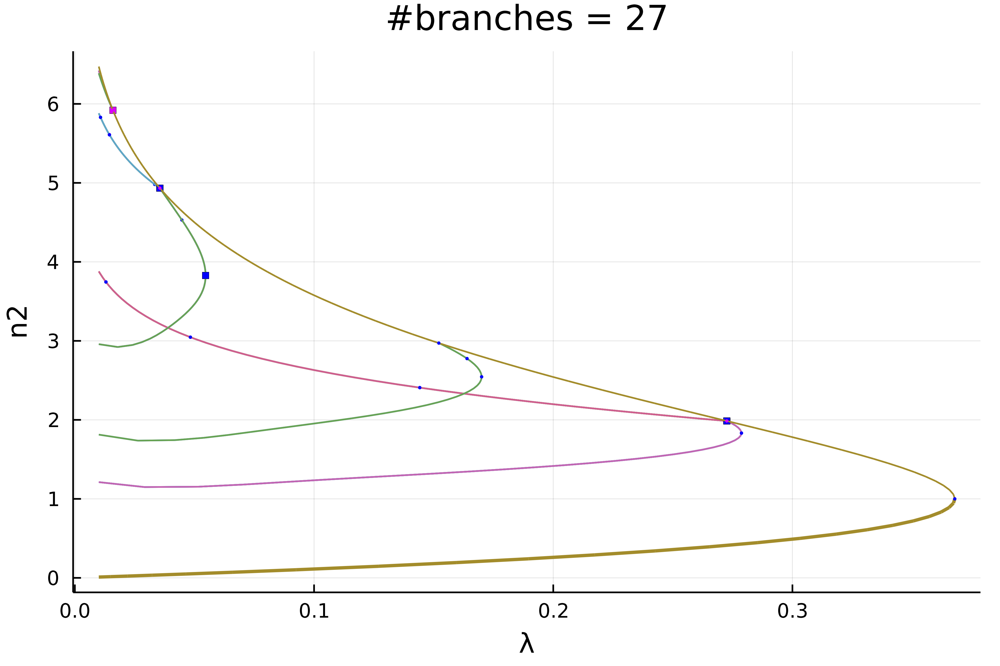
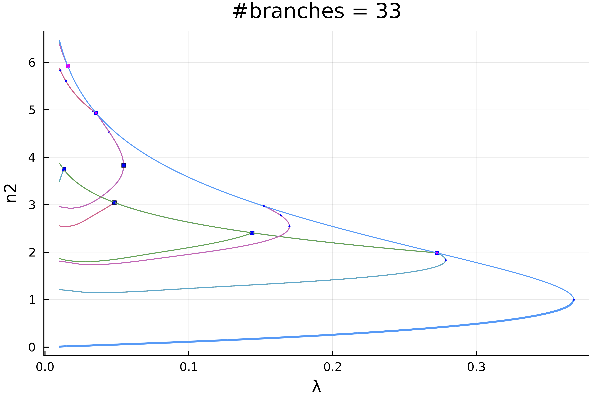

🟡 Automatic diagram of 2d Bratu–Gelfand problem
The following example is exposed in Farrell, Patrick E., Casper H. L. Beentjes, and Ásgeir Birkisson. The Computation of Disconnected Bifurcation Diagrams. ArXiv:1603.00809 [Math], March 2, 2016. . It is also treated in Michiel Wouters. Automatic Exploration Techniques for the Numerical Continuation of Large–Scale Nonlinear Systems, 2019.
We consider the problem of Mittelmann:
\[\Delta u +NL(\lambda,u) = 0\]
with Neumann boundary condition on $\Omega = (0,1)^2$ and where $NL(\lambda,u)\equiv-10(u-\lambda e^u)$. This is a good example to show how automatic bifurcation diagram computation works.
We start with some imports:
using Revise, ForwardDiffusing BifurcationKit, LinearAlgebra, Plots, SparseArraysconst BK = BifurcationKitBK.set_plot_backend!(BK.BK_Plots()) # hide# define the sup normnorm2(x) = norm(x) / sqrt(length(x))normbratu(x) = norm(x .* w) / sqrt(length(x)) # the weight w is defined below# some plotting functions to simplify our lifeplotsol!(x, nx = Nx, ny = Ny; kwargs...) = heatmap!(reshape(x, nx, ny); color = :viridis, kwargs...)plotsol(x, nx = Nx, ny = Ny; kwargs...) = (plot();plotsol!(x, nx, ny; kwargs...))and with the discretization of the problem
function Laplacian2D(Nx, Ny, lx, ly) hx = 2lx/Nx hy = 2ly/Ny D2x = spdiagm(0 => -2ones(Nx), 1 => ones(Nx-1), -1 => ones(Nx-1) ) / hx^2 D2y = spdiagm(0 => -2ones(Ny), 1 => ones(Ny-1), -1 => ones(Ny-1) ) / hy^2 D2x[1,1] = -1/hx^2 D2x[end,end] = -1/hx^2 D2y[1,1] = -1/hy^2 D2y[end,end] = -1/hy^2 D2xsp = sparse(D2x) D2ysp = sparse(D2y) A = kron(sparse(I, Ny, Ny), D2xsp) + kron(D2ysp, sparse(I, Nx, Nx)) return Aendϕ(u, λ) = -10(u-λ*exp(u))dϕ(u, λ) = -10(1-λ*exp(u))function Fmit!(f, u, p) mul!(f, p.Δ, u) f .= f .+ ϕ.(u, p.λ) return fendIt will also prove useful to have the jacobian of our functional and the other derivatives:
function JFmit(x,p) J = p.Δ dg = dϕ.(x, p.λ) return J + spdiagm(0 => dg)endWe need to pass the parameters associated to this problem:
Nx = 30Ny = 30lx = 0.5ly = 0.5# weight for normbratuconst w = (lx .+ LinRange(-lx,lx,Nx)) * (LinRange(-ly,ly,Ny))' |> vecw .-= minimum(w)Δ = Laplacian2D(Nx, Ny, lx, ly)# parameters associated with the PDEpar_mit = (λ = .01, Δ = Δ)# initial conditionsol0 = 0*ones(Nx, Ny) |> vec# Bifurcation Problemprob = BifurcationProblem(Fmit!, sol0, par_mit, (@optic _.λ),; J = JFmit, record_from_solution = (x, p; k...) -> (x = normbratu(x), n2 = norm(x), n∞ = norminf(x)), plot_solution = (x, p; k...) -> plotsol!(x ; k...))To compute the eigenvalues, we opt for the solver in KrylovKit.jl
# eigensolvereigls = EigArpack()# options for Newton solveropt_newton = NewtonPar(tol = 1e-8, verbose = true, eigsolver = eigls, max_iterations = 20)# options for continuation, we want to locate very precisely the# bifurcation points, so we tune the bisection accordinglyopts_br = ContinuationPar(dsmin = 0.0001, dsmax = 0.04, ds = 0.005, p_max = 3.5, p_min = 0.01, detect_bifurcation = 3, nev = 50, plot_every_step = 10, newton_options = (@set opt_newton.verbose = false), max_steps = 251, tol_stability = 1e-6, n_inversion = 6, dsmin_bisection = 1e-7, max_bisection_steps = 25, tol_bisection_eigenvalue = 1e-19)Note that we put the option detect_bifurcation = 3 to detect bifurcations precisely with a bisection method. Indeed, we need to locate these branch points precisely to be able to call automatic branch switching.
In order to have an output like Auto07p, we provide the finaliser (see arguments of continuation)
function finSol(z, tau, step, br; k...) if length(br.specialpoint)>0 if br.specialpoint[end].step == step BK._show(stdout, br.specialpoint[end], step) end end return trueendAutomatic bifurcation diagram
In order to avoid spurious branch switching, we use a callback (see continuation) to reject specific continuation steps where the jump in parameters is too large or when the residual is too large:
function cb(state; kwargs...) _x = get(kwargs, :z0, nothing) fromNewton = get(kwargs, :fromNewton, false) if ~fromNewton return (norm(_x.u - state.x) < 20.5 && abs(_x.p - state.p) < 0.05) end trueendFinally, before calling the automatic bifurcationdiagram, we need to provide a function to adjust the continuation parameters as function of the branching level (Note that this function can be constant).
function optionsCont(x,p,l; opt0 = opts_br) if l == 1 return opt0 elseif l==2 return setproperties(opt0 ;detect_bifurcation = 3,ds = 0.001, a = 0.75) else return setproperties(opt0 ;detect_bifurcation = 3,ds = 0.00051, dsmax = 0.01) endendWe are then ready to compute the bifurcation diagram. If we choose a level 5 of recursion like
diagram = @time bifurcationdiagram(prob, PALC(), # important argument: this is the maximal # recursion level 5, optionsCont; verbosity = 0, plot = true, callback_newton = cb, usedeflation = true, finalise_solution = finSol, normC = norminf)this gives using plot(diagram; plotfold = false, putspecialptlegend=false, markersize=2, title = "#branches = $(size(diagram))"):

We can zoom in on the left part to get

Actually, this plot is misleading because of the symmetries. If we chose a weighted norm which breaks those symmetries and use it to print the solution, we get
plot(diagram; plotfold = false, putspecialptlegend=false, markersize=2, title = "#branches = $(size(diagram))", vars = (:param, :nw), label = "")
We can make more sense of these spaghetti by only plotting the first two levels of recursion
plot(diagram; level = (1, 2), plotfold = false, putspecialptlegend=false, markersize=2, label = "", vars = (:param, :nw))
Interactive exploration
We can see that the non-simple 2d branch points (magenta points) have produced non trivial branches. For example, we can look at the second bifurcation point (the first is the fold) which is composed of 8 branches
plot(getBranchesFromBP(diagram, 2); plotfold = false, legend = false, vars = (:param, :nw))

Interactive computation
Let's say you have been cautious and did not launch a deep bifurcation diagram computation by using a small recursion level 2:
diagram = bifurcationdiagram(prob, PALC(), # here the recursion level is 2, optionsCont; verbosity = 0, plot = true, callback_newton = cb, usedeflation = true, finalise_solution = finSol, normC = norminf)You would end up with this diagram

How can we complete this diagram without recomputing it from scratch? It is easy! For example, let us complete the magenta branches as follow
bifurcationdiagram!(prob, # this improves the first branch on the violet curve. Note that # for symmetry reasons, the first bifurcation point # has 8 branches get_branch(diagram, (1,)), 6, optionsCont; verbosity = 0, plot = true, callback_newton = cb, finalise_solution = finSol, usedeflation = true, normC = norminf)This gives the following diagram. Using this call, you can pinpoint the particular location where to refine the diagram.
